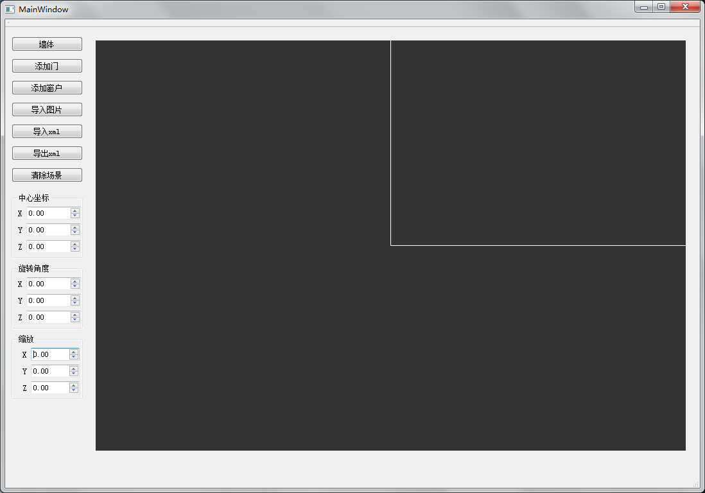

3D indoor modeling based on rules
I made a software converting 2D images to 3D models quickly, using a interactive theory which is based on shape grammar, helping designers in accomplishing the seemingly impossible.

Programs of computer graphics, animation, version and combinations of all.
I made a software converting 2D images to 3D models quickly, using a interactive theory which is based on shape grammar, helping designers in accomplishing the seemingly impossible.
In this project, we implemented a technology named Precomputed Radiance Transfer for Real-Time Rendering in Dynamic, Low-Frequency Lighting Environments, which was frequently used in game engine. We precomputed a serial of coefficients and saved it, in run-time, used the coefficients to compute the color of every vertices quickly. We used a low-order spherical harmonic (SH) basis to represent such environments efficiently without aliasing.
Technologies using in computer animation including interpolation, pathcurve, partical system and crowd animation


We established a gaming community for game lovers to communicate and evaluate games. Players can search the game they want, find the comments and scores other players give to the game. They can also register and login their account to leave comments or give a mark.